Organizations often require quick insight into data to understand the business impact, and don't want to waste
valuable time consulting their corporate IT team. With the InsightEdge JDBC driver ,
this can be done using the data stored in the data grid. Tableau
can be connected to the data grid via
This topic describes how to set up an integration of Tableau with
Tableau version 2019.1 or later is required.
Tableau can connect to the data grid using the
The example in this topic uses a familiar Simple - Superstore Tableau users data set. The original schema
is too simple to show the join capabilities, so the model was updated with location information that is referenced
by the orders entity. The updated schema is as follows:

In order to integrate Tableau with
Add sample data to the Space.
After
Download and configure Tableau to work with
Perform a query on the data grid via Tableau, and view the results.
Before you deploy the data grid for the purpose of this demo, you should install the
The first step is deploying a data grid and creating a Space.
To deploy the data grid on a local machine:
installmavenrep.bat script.insightedge-maven.cmd script.
Navigate to the
Type insightedge host run-agent --auto --gsc=2 to create a data grid.
Launch a new command window.
Type insightedge space deploy --partitions=2 tableauSpace to create a Space with the name tableauSpace.
After the Space is created, it needs to be populated with sample data, so that you can later run queries on this data via Tableau.
To populate the Space with data:
Download the InsightEdge SQL demo and unpack it.
Under the extracted insightedge-sql-demo folder, build the sample with mvn clean install.
Execute the following command:
java -jar target\insightedge-sql-demo.jar --space-url "jini://*/*/tableauSpace?locators=127.0.0.1" --lookup-group <DATA_GRID_LOOKUP_GROUP>
Substitute the value <DATA_GRID_LOOKUP_GROUP> with the appropriate value for your
deployment. The lookup-group argument is optional.
Open the GigaSpaces Management Center in order to verify that the data was populated in the Space as expected.
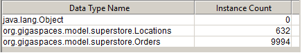
When connecting to the data grid, the ODBC-JDBC gateway runs the
To generate the
Navigate to
Run the build-jdbc-client.cmd script to create the file insightedge-jdbc-client.jar.
Follow these instructions to download, install, and set up the Easysoft ODBC-JDBC gateway.
If you don't want to use the Easysoft ODBC-JDBC Gateway, you can use your preferred bridge implementation.
To download and install the Easysoft ODBC-JDBC gateway:
Log in to the Easysoft web site: link. (If this is your first time working with Easysoft, first follow the instructions to register and create your Easysoft user account.)
Download the gateway from the Easysoft website.
Install the gateway on your local machine.
After you install the Easysoft gateway on your machine, you must request a trial license in order to run the application.
To obtain a trial Easysoft license for the ODBC-JDBC gateway:
<EASYSOFT-HOME>\Easysoft\License Manager and open the Easysoft Data Access
License Manager.Complete the following:
Provide your Easysoft account information: Name, E-Mail Address, Company,
Telephone
Click Request License.
Select the license type (Trial).
Click Next.
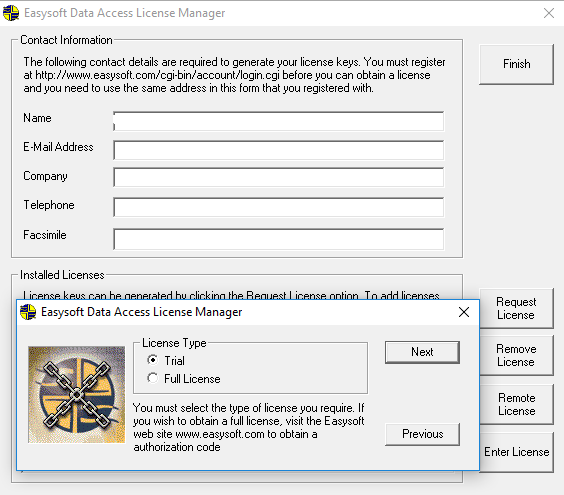
From the dropdown list, select Easysoft ODBC-JDBC Gateway (Desktop)(2.5), then click Next.
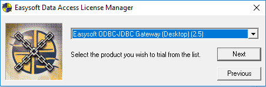
Review your contact information to verify that it is correct, and click On-line Request.
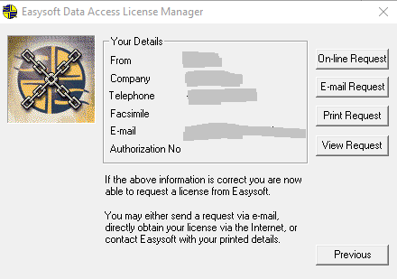
Look in your email spam section for the license. At this point, your user account is updated and you have access to the ODBC-JDBC gateway software for the duration of the trial license period.
After you have installed the gateway software and obtained a trial license, you have to configure the gateway to point to the required data source.
To configure the ODBC-JDBC gateway:
Navigate to the ODBC Data Source Administrator in Microsoft Windows.
For instructions on how to access the ODBC Data Source Administrator, see this Microsoft help topic.
On the right-hand side of the ODBC Data Source Administrator window, go the System Data Sources tab, click Add.
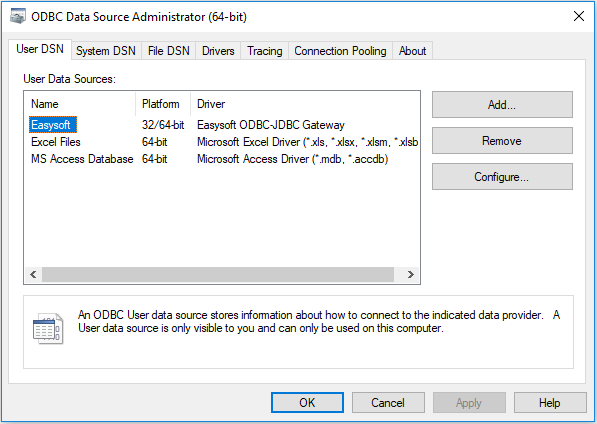
In the Create New Data Source dialog that opens, click Easysoft ODBC-JDBC Gateway.
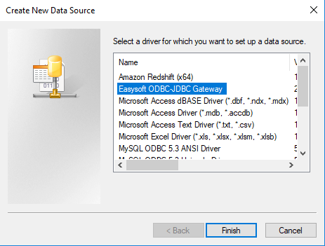
Click Finish.
IMPORTANT - edit the CLASSPATH environment variable and append to it the path to your insightedge-jdbc-client.jar file. Create the CLASSPATH environment variable if it doesn't exist.
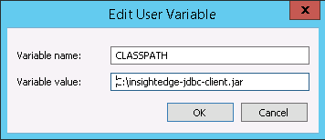
In the Easysoft ODBC-JDBC Gateway DSN Setup window that is displayed, configure the gateway access to the data source by filling in the fields with the following values:
DSN: easysoft-insightedge-odbc-jdbc
Driver Class: com.gigaspaces.jdbc.Driver
Class Path: Leave field empty
URL: jdbc:insightedge:url=jini://*/*/tableauSpace?locators=127.0.0.1
Check the Strip Quote check box.
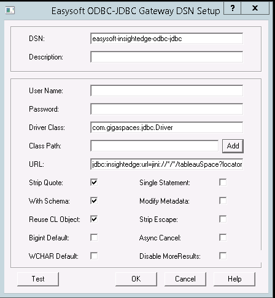
Click Test to verify the new connection.
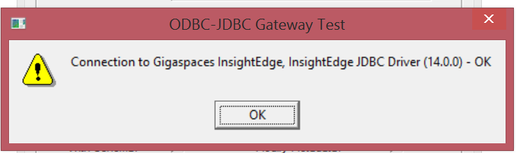
Click OK in the confirmation message, and click OK in the Easysoft ODBC-JDBC Gateway DSN Setup window to save your changes.
Click OK in the ODBC Data Source Administrator window.
To configure the connection:
Run the following command:
<TABLEAU_HOME>\bin\tableau.exe -DConnectPluginsPath=<GS_HOME>\insightedge\tools\jdbcDownload and install the Tableau desktop.
After the data grid has been populated with the sample data, and
Tableau has to be configured to use the ODBC-JDBC gateway as the data source.
To configure the
Click Connect in the Tableau desktop, and select
If on the first access Gigaspaces InsightEdge does not appear in the Connect menu, Click More and select Gigaspaces InsightEdge from the alphabetic list.
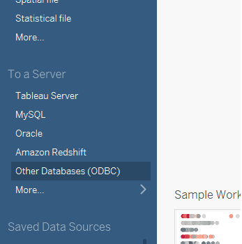
In the Other Databases (ODBC) window, configure the options as follows:
a. In the Connect Using area, defin the DSN:
Select easysoft-insightedge-odbc-jdbc.
Click Connect.
b. In the *Connection Attributes** area, provide the name of the database:
Click Sign In.
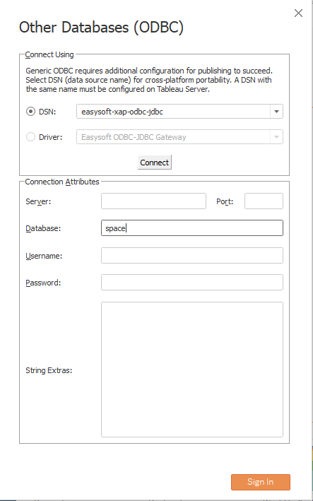
Under Connections, click the search icon in the Schema area and select space.
The sample data contains a Space called space. If you have additional Spaces
in your
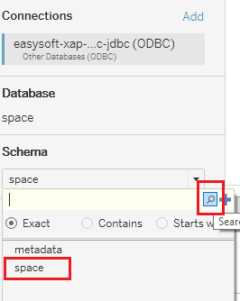
Verify that Tableau can see the sample data by peforming a table search. You should see Locations and Orders in the list of tables.
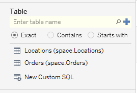
Before performing a query on the data grid, you can use the GigaSpaces Management Center to look at the Space that contains the sample data. At this point, there have been no read operations.
Everything that needs to be configured has been set up, and you can execute queries against the data in the grid.
To query the data in
Join the tables as Inner.
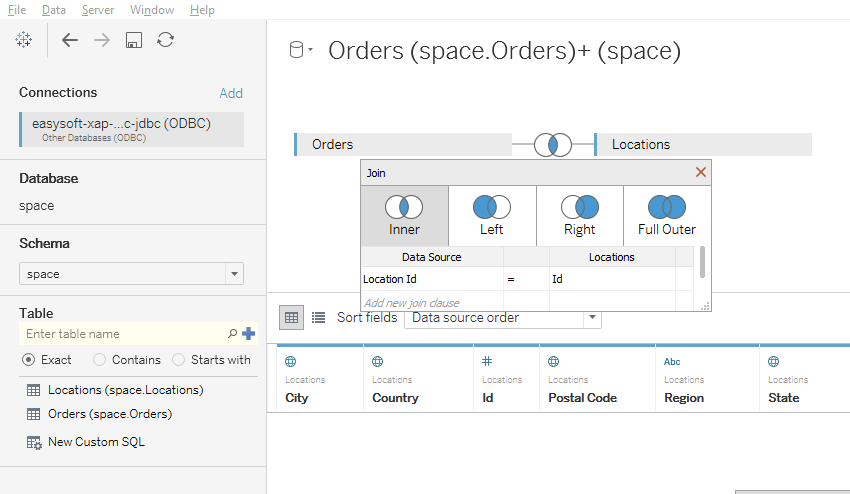
Below the data pane, select the Sheet1 tab.
Select Country and State from the Locations node using standard Windows functionality (press the Ctrl key while selecting).
Right-click and select Create Hierarchy from the menu that is displayed.
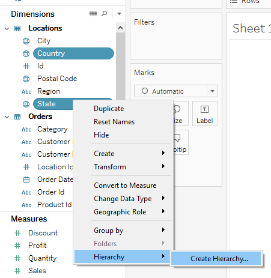
Double-click State.
From the Measures area, drag and drop Sales to the Size option in the Marks card, and Profit to the Color option.
View the results in the data pane; you can easily see the sales-profit insight that was derived from the data retrieved from the data grid.
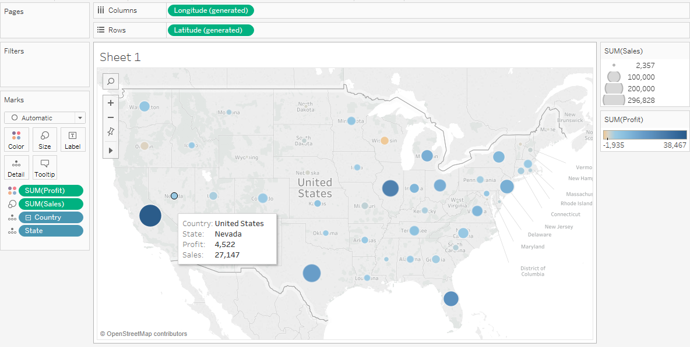
In the GigaSpaces Management Center, view the Space operations statistics. You can see the read operations that were performed when Tableau accessed the data grid to construct the view:
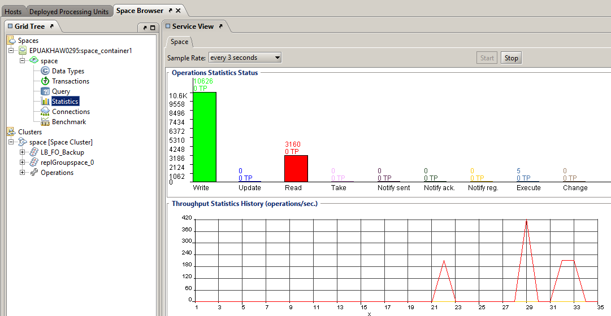
|
|
|
Predictive Stock Pricing Demo |